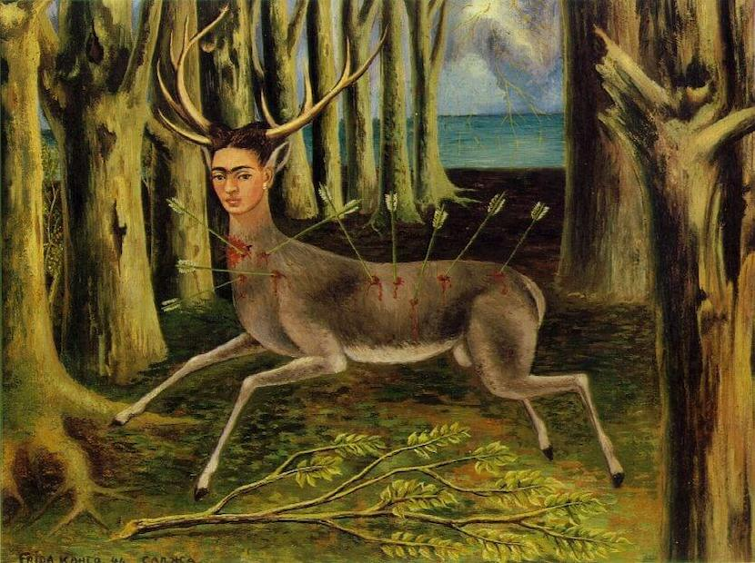
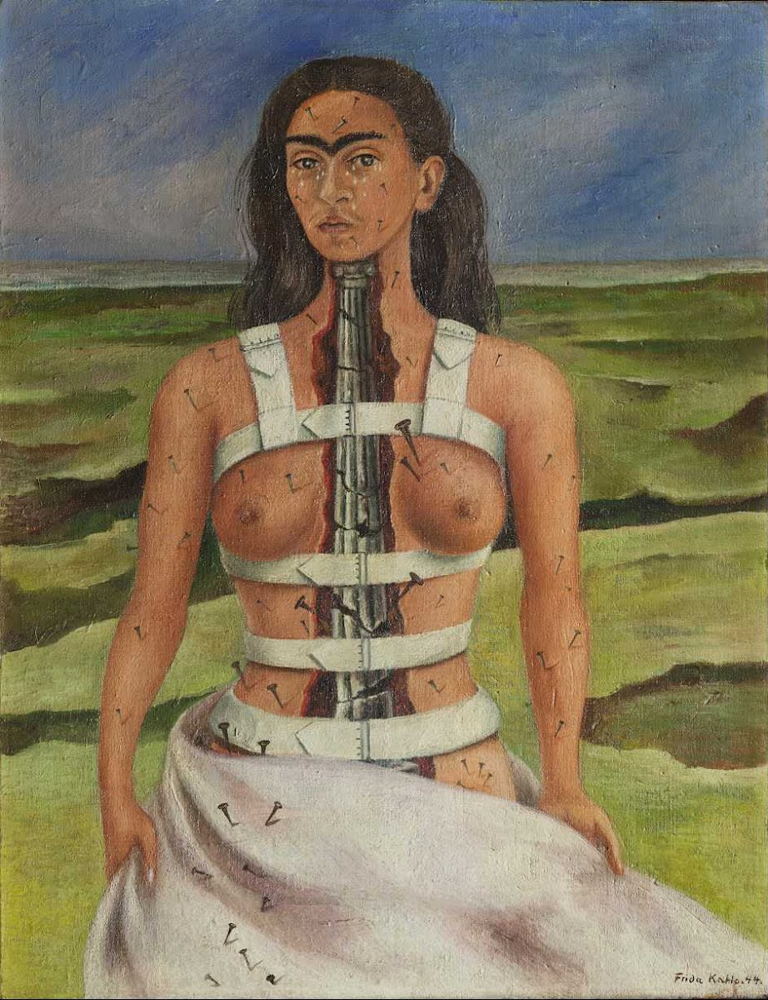
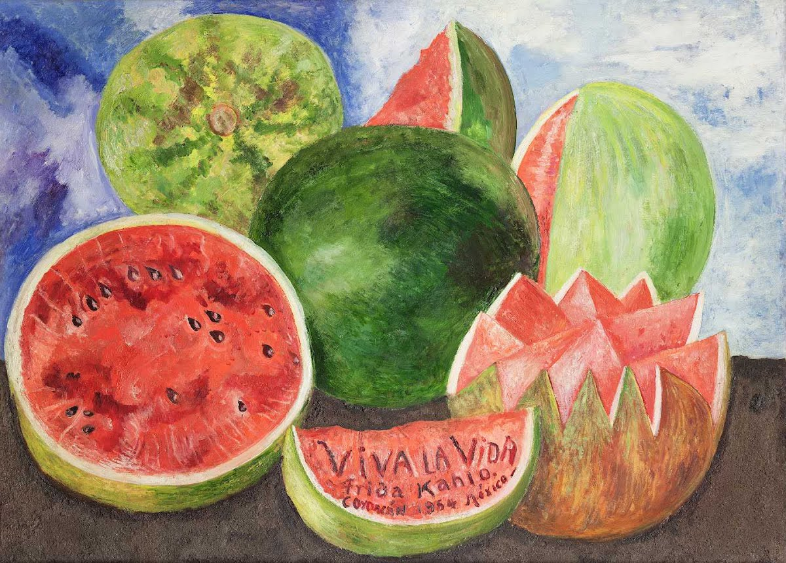

Float
Frida Khalo :)
Frida Khalo
Frida Khalo is one of my favorite painters because she created beautiful pieces that meant a lot to her. A few of my favorite pieces that she created are The Wounded Deer, The broken Cloumn, and Viva La Vida, Watermelons.
I really like these pieces because these all reflected about her life and what she was going thorugh at the time.
 
